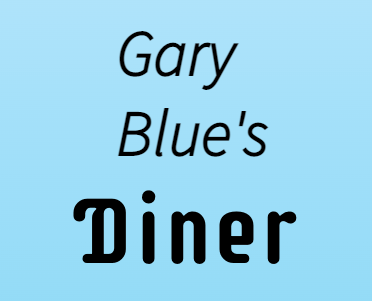
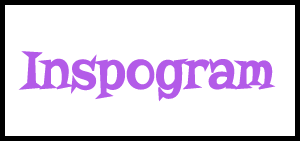
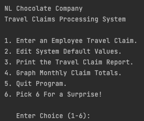
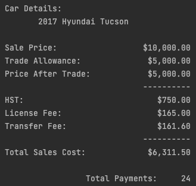
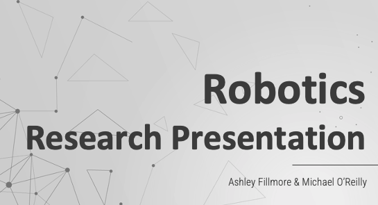

Works

Designing a Website
2021 - Website
While in the second semester of school, we started learning about JavaScript, HTML and CSS. Our first major project, known as a sprint, was to design a functioning website that linked at least 3 pages.
2021 - Website
While in the second semester of school, we started learning about JavaScript, HTML and CSS. Our first major project, known as a sprint, was to design a functioning website that linked at least 3 pages.

Creating an App
2021 - App
Our second major project in the second semester was to create a functioning social media app using React. We were provided with a default project and I took my inspiration from Instagram.
2021 - App
Our second major project in the second semester was to create a functioning social media app using React. We were provided with a default project and I took my inspiration from Instagram.

Processing System Using Python
2021 - Python
Learning the language of Python was the main focus in our first semester. One of our sprint projects was to create a travel claims processing system with multiple options for the user to choose from, such as entering a claim or graphing monthly claim totals. This was a team effort, so the credit extends to my fellow classmates Michael O'Reilly, Gerald Bartlett and John Byrne.
2021 - Python
Learning the language of Python was the main focus in our first semester. One of our sprint projects was to create a travel claims processing system with multiple options for the user to choose from, such as entering a claim or graphing monthly claim totals. This was a team effort, so the credit extends to my fellow classmates Michael O'Reilly, Gerald Bartlett and John Byrne.

Receipt and Payment Details Using Python
2021 - Python
Another sprint project from first semester was to create a system where the user inputs all the required information that is then calculated to show as a receipt. The user can also choose 1 of 4 payment options which is calculated and displayed. This was a team effort, so the credit extends to my fellow classmate Michael O'Reilly.
2021 - Python
Another sprint project from first semester was to create a system where the user inputs all the required information that is then calculated to show as a receipt. The user can also choose 1 of 4 payment options which is calculated and displayed. This was a team effort, so the credit extends to my fellow classmate Michael O'Reilly.

Robotics PowerPoint Presentation
2021 - PowerPoint
One of our assignments was to pick a topic we were passionate about and research it, followed by a PPT presentation to the rest of our class and instructor. My partner Michael O'Reilly and I chose robotics. He researched Boston Dynamics and Ouster, and I researched Kraken Robotics and Vicarious Surgical.
2021 - PowerPoint
One of our assignments was to pick a topic we were passionate about and research it, followed by a PPT presentation to the rest of our class and instructor. My partner Michael O'Reilly and I chose robotics. He researched Boston Dynamics and Ouster, and I researched Kraken Robotics and Vicarious Surgical.